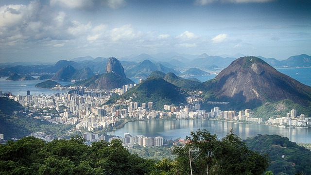
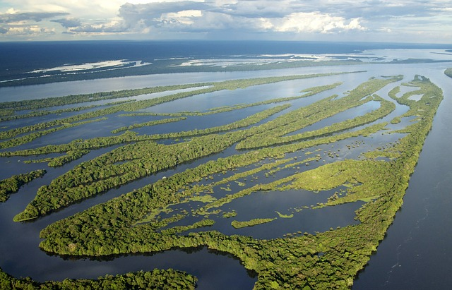

For 65 million years, Amazonian forests remained relatively resilient to climatic variability. Now, the region is increasingly exposed to unprecedented stress from warming temperatures, extreme droughts, deforestation and fires, even in central and remote parts of the system
The Amazon is an incredibly unique place. It is the world's largest rain forest and river system, and the most biologically diverse place on Earth. It contains millions of species, most of them still undescribed. Both the Amazon's forest and freshwater systems are at risk.
In the last 40 years, the Brazilian Amazon has lost more than 18 percent of its rainforest — an area about the size of California — to illegal logging, soy agriculture, and cattle ranching. Despite the creation of protected areas in recent decades, most of the remaining forest is under threat.
By measuring the environmental impact of reforestation and conservation projects. It does so by acquiring multiple data sets from satellite imagery, manually-created field plots, and 3-dimensional images of forests. It then uses AI to combine and process the information to determine how much CO2 the forest stores.